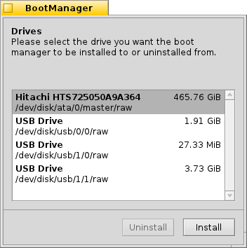

Polski
Polski Català
Català Deutsch
Deutsch English
English Español
Español Français
Français Italiano
Italiano Magyar
Magyar Português
Português Português (Brazil)
Português (Brazil) Română
Română Slovenčina
Slovenčina Suomi
Suomi Svenska
Svenska 中文 ［中文］
中文 ［中文］ Русский
Русский Українська
Українська 日本語
日本語 Menedżer rozruchu
Menedżer rozruchu
| Deskbar: | Brak wpisu, uruchamiany z menu w Instalatorze | |
| Ścieżka: | /boot/system/apps/BootManager | |
| Ustawienia: | brak kopie zapasowe MBR domyślnie zapisywane w ~/config/settings/bootman/ |
Jeżeli nie dodasz partycji z Haiku do istniejącego menedżera rozruchu, takiego jak GRUB, ta aplikacja może zainstalować proste menu rozruchowe w Głównym Sektorze Rozruchowym (MBR), które wygląda jak na obrazku poniżej:

Menedżer rozruchu poprowadzi Cię przez proces instalacji menu rozruchowego.
 Wybieranie dysku docelowego
Wybieranie dysku docelowego

Po uruchomieniu, Menedżer rozruchu wyświetla listę wszystkich dostępnych dysków, z której możesz wybrać ten docelowy. Jeśli menu rozruchowe jest już na tym dysku zainstalowane, przycisk będzie aktywny, pozwalając na łatwe przywrócenie Głównego Sektora Rozruchowego z kopii zapasowej, w ten sposób usuwając menu. W przeciwnym razie, kliknij , aby kontynuować.
Sporządzanie kopii zapasowej Głównego Sektora Rozruchowego (MBR)
W przypadku gdy coś pójdzie nie tak lub będziesz chcieć usunąć menu rozruchowe, kopia Głównego Sektora Rozruchowego (MBR) będzie teraz zachowana. Jest to bardzo ważny krok, upewnij się, że przypadkiem nie nadpisujesz innej kopii zapasowej (np. z poprzednich eksperymentów).


Wybierz ścieżkę dla pliku „MBR” zawierającego kopię albo pozostaw domyślną. Po kliknięciu otrzymasz potwierdzenie z informacją czy zapis kopii się powiódł.
Konfigurowanie menu rozruchowego


Teraz zostanie zaprezentowana lista partycji na wybranym dysku. Zanaczając pola obok każdego z wpisów, możesz zdecydować które z nich pojawią się w menu, a pola tekstowe pozwalają zmienić nazwę widoczną w menu.
Następnie, ustaw w rozwijanym menu który wpis powinien zostać wybrany domyślnie oraz, korzystając z suwaka poniżej, limit czasowy. „Natychmiast” pominie menu całkowicie, „Nigdy” spowoduje zatrzymanie rozruchu do czasu wybrania wpisu. Możesz usunąć limit przytrzymując klawisz ALT podczas rozruchu.
Zapisywanie menu rozruchowego


Zanim menu zostanie zapisane na dysku, zobaczysz podsumowanie wybranych ustawień oraz będziesz mieć ostatnią szansę na zaniechanie operacji. Nie martw się jednak, tak długo jak posiadasz kopię zapasową sektora MBR, możesz łatwo odwrócić zmiany. Jeśli coś poszło bardzo źle, zawsze możesz uruchomić Haiku z płyty CD lub dysku USB i przywrócić sektor MBR przy pomocy Menedżera rozruchu.